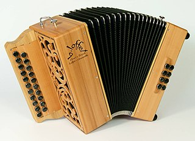

C'est ainsi qu'on appelle parfois l'accordéon diatonique qui accompagne parfois les musiques traditionnelles. Comme en Europe, cet instrument de musique a eu du succès surtout au XIXème siècle, juste après son invention pour tomber peu à peu dans l'oubli surtout à l'après guerre. Les années 70 ont vu revenir cet instrument avec l'avènement des musiques folk. La Réunion a aussi pris cette voie en popularisant le maloya et le séga durant cette même période.
Accordéon diatonique fabriqué par Bernard Loffet. Les râlé poussé réunionnais sont souvent de facture italienne ou allemande mais celui ci est français.
Instruments http://www.ethnomusicscape.de/reunion-Dateien/MusicalInstrumentsReunion.pdf https://bloc-note.ac-reunion.fr/9741304z/files/2020/06/le-maloya-2.pdf https://www.reunion.fr/decouvrez/au-rythme-de-la-musique-creole-a-la-reunion/les-instruments-de-la-musique-reunionnaise/ Roulér Houleur ou Houlér : instrument d'origine réunionnaise. Il s'agit d'un gros tambour constitué d'une barrique et d'une peau de bœuf cloutée. C'est la base rythmique du maloya. A Maurice, on l'appelle "ravan" mais il est fait d'une rondelle de barrique et d'une peau. Le rouler https://www.youtube.com/watch?v=7ynykIyzMsQ Sombrèr : origine inconnue. C'est un ensemble de piqueurs de différentes sortes, montés sur un cadre. Bobre instrument d'origine malgache. C'est un arc dont le bois est en "pan maron" ou "zavoca maron" et la corde en fibre de choca ou câble de frein (Danyèl Waro). Une calebasse en guise de caisse de résonance coulisse sur la corde. Cette corde est battue par une baguette de bambou ("batavek"). L'interprète agite un hochet ("kaskavel" ou "kavia") qui est une bourse de vacoa remplie de graines de cascavelle, dans la main qui tient la baguette. Cet instrument est présent en Afrique et dans l'Océan Indien. A Rodrigues, on l'appelle "bon", aux Seychelles"bonm", à Maurice "bombe" (disparu au XIXème siècle).